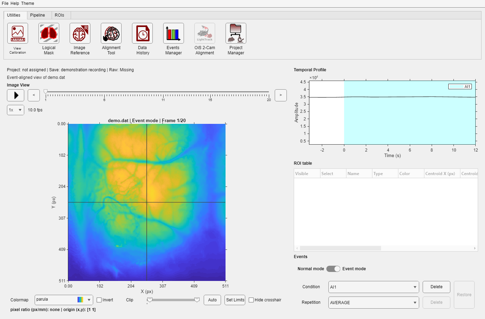

Inspect spatial patterns and follow how a selected pixel changes through time.
Open an image time series in DataViewer.

The image title reports the frame and mode. Display limits and colormap change the appearance only; the values in the data source stay unchanged.
Frame selection, playback, crosshair position, colormap, and clipping are display state. Deleting an event condition or repetition changes only the current selection state in memory until a tool explicitly saves event metadata.
| Problem | Action |
|---|---|
| Event mode is unavailable | Create or repair events.mat with Events Manager. |
| Playback is slow | Use a lower speed. Disk-backed data may be limited by storage performance. |